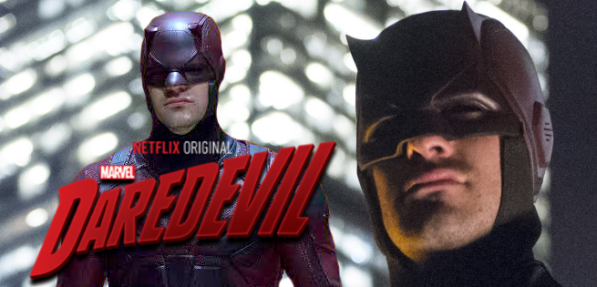

5: SEAL Team
Ratings : 🌟 7.5
Genre :ActionDramaWar
Seasons : 4
Episodes : 74
Air-Date : September 27, 2017
Watch-Time : 43 min.(Per Ep.)
Synopsis:
SEAL Team is a military drama that follows the professional and personal lives of the most elite unit of Navy SEALs as they train, plan, and execute the most dangerous, high-stakes missions our country can ask of them. Jason Hayes is the respected, intense leader of the Tier One team whose home life has suffered as a result of his extensive warrior's existence. His team includes his trusted confidant, Ray Perry, the longest-tenured operator with whom Jason shares an ingrained shorthand; Sonny Quinn, an exceptional, loyal soldier with a checkered past who still combats self-destructive tendencies; and Clay Spenser, a young, multilingual, second-generation SEAL with insatiable drive and dedication. Vital to the team's success are troop commander Lt. Cdr. Eric Blackburn, who serves as a leader and confidant both on and off the battlefield; CIA analyst Mandy Ellis, who has sacrificed everything in her drive to root out evil and take down terrorists; and Ensign Lisa Davis, a no-nonsense, take-charge officer. Deployed on clandestine missions worldwide at a moment's notice, and knowing the toll it takes on them and their families, this tight-knit SEAL team displays unwavering patriotism and fearless dedication even in the face of overwhelming odds.
4: Star Trek: The Original Series
Ratings : 🌟 8.3
Genre : ActionAdventureSci-Fi
Seasons : 3
Episodes : 80
Air-Date : 1996
Watch-Time : 50 min.(Per Ep.)
Synopsis:
A 1960's science fiction action adventure series set in the twenty-third century based around the crew of the U.S.S. Enterprise, representing the United Federation of Planets (including Earth) on a five-year mission in outer space to explore new worlds, seek new life and new civilizations, and to boldly go where no one has gone before. The Enterprise is commanded by handsome and brash Captain James Tiberius "Jim" Kirk (William Shatner). Kirk's two best friends are Commander Spock (Leonard Nimoy) (last name unpronounceable to humans) the ship's half-human/half-Vulcan Science Officer and First/Executive Officer (i.e. second-in-command) from the planet Vulcan, and Chief Medical Officer Dr. Leonard H. "Bones" McCoy (DeForest Kelley). They, along with a crew of approximately four hundred and thirty, including helmsman Lieutenant Hikaru Kato Sulu (George Takei), navigator Ensign Pavel Andreievich Chekov (Walter Koenig), communications officer Lieutenant Nyota Uhura (Nichelle Nichols)
3: Stargate SG-1

Ratings : 🌟 8.4
Genre : ActionAdventureDrama
Seasons : 10
Episodes : 213
Air-Date : July 27, 1997
Watch-Time : 44 min.(Per Ep.)
Synopsis:
General Hammond summons Colonel Jack O'Neill out of retirement to embark on a secret rescue mission. O'Neill confesses that he disobeyed orders to destroy the Stargate on Planet Abydos, and that scientist Daniel Jackson may still be alive. Arriving on Abydos with his team, O'Neill meets up once again with the scientist, who has discovered a giant elaborate cartouche in hieroglyphics. All signs point to the fact that this is a map of many Stargates that exist throughout the galaxy - a development that makes the dream of the SG-1 team to travel throughout the universe in time a reality
2: Daredevil
Ratings : 🌟 8.6
Genre : ActionCrimeDrama
Seasons : 3
Episodes : 39
Air-Date : April 10, 2015
Watch-Time : 54 min.(Per Ep.)
Synopsis:
The first season sees lawyer-by-day Matt Murdock use his heightened senses from being blinded as a young boy to fight crime at night on the streets of New York City's Hell's Kitchen neighborhood as Daredevil, while uncovering a conspiracy of the criminal underworld being led by Wilson Fisk. In the second season, Murdock continues to balance life as a lawyer and Daredevil, while crossing paths with Frank Castle / Punisher, a vigilante with far deadlier methods, as well as the return of an ex-girlfriend—Elektra Natchios. In the third season, after Fisk is released from prison, Murdock, who has been missing for months following the events of The Defenders, reemerges as a broken man and must decide between hiding from the world as a criminal lawyer, or embracing his life as a hero vigilante.
1: The Mandalorian

Ratings : 🌟 8.8
Genre : ActionAdventureSci-Fi
Seasons : 3
Episodes : 24
Air-Date : November 12, 2019
Watch-Time : 40 min.(Per Ep.)
Synopsis:
The Mandalorian is a live-action Star Wars television series developed by Lucasfilm. The series takes place about five years after the events of Star Wars: Episode VI Return of the Jedi and airs exclusively on the new streaming service by Disney called Disney+ which began on November 12, 2019. Jon Favreau is the writer and executive producer of the series. Directors include Dave Filoni, Deborah Chow, Rick Famuyiwa, Bryce Dallas Howard, and Taika Waititi.